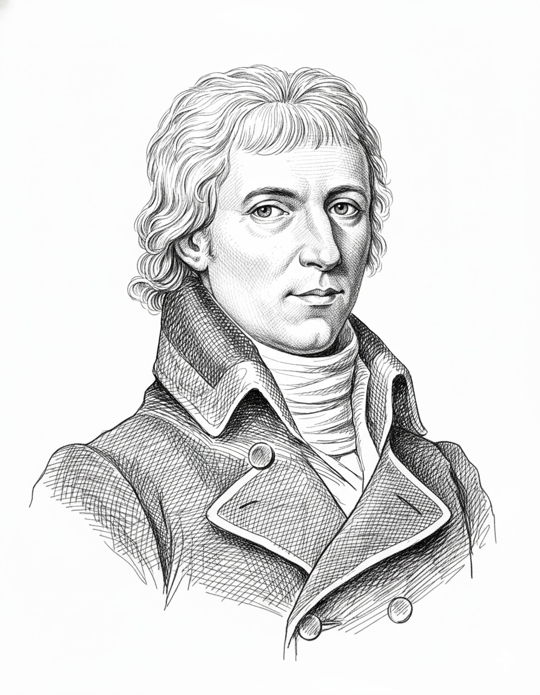

Nicolas Baudin


Nicolas Baudin, born in 1754 at Saint-Martin-de-Ré, was a leading French mariner and explorer. After several voyages in the Indian Ocean and later to the West Indies — notably the expedition of La Belle Angélique, which played an important part in his selection — he was appointed by Bonaparte, with the support of the scholars of the Institut national des sciences et des arts, to command a major voyage of discovery to the southern lands. The expedition left Le Havre in October 1800 aboard two corvettes: Le Géographe, commanded by Baudin himself, and Le Naturaliste, under the command of Jacques Félix Emmanuel Hamelin.
Between 1801 and 1803, Baudin directed the reconnaissance and charting of extensive stretches of the Australian coastline. Under his command, the officers and hydrographers surveyed much of the southern and western coasts of New Holland, together with part of the eastern and northern coasts of Van Diemen’s Land. Baudin oversaw the organisation of the reconnaissance, the navigation of the vessels and the work undertaken to determine more precisely the position and form of capes, bays, islands and other coastal features, which later provided the geographical framework for the voyage’s cartography and nomenclature. At the same time, his naturalists assembled more than 100,000 natural-history specimens, while his artists produced over 1,500 drawings and paintings.
In April 1802, during the reconnaissance of the southern coast, Baudin met the British navigator Matthew Flinders, who was himself engaged in surveying and charting this part of the continent.
Baudin died of tuberculosis in September 1803 at Île de France, present-day Mauritius, during the return voyage. The expedition produced important scientific and cartographic results, and many places in Australia still bear names associated with the voyage. Baudin himself, however, was absent from the official nomenclature published after the expedition: none of the names retained by Péron and Freycinet commemorated him.
It was ultimately Matthew Flinders who gave Baudin’s name to a feature on the Australian coast. During their meeting at Encounter Bay, Baudin had pointed out to him a group of low rocks lying offshore. Flinders named them Baudin’s Rocks and later explained in A Voyage to Terra Australis that he retained the name because no designation had been assigned to them in Péron’s published account. Baudin’s name thus entered the geography of Australia not through the official nomenclature of his own expedition, but through the British navigator whom he had met on the southern coast of the continent.